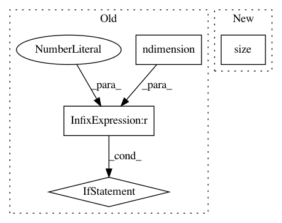

1b809b3c9570d617cb26949e40b921b36e826580,gpytorch/lazy/kronecker_product_lazy_variable.py,,_matmul,#Any#Any#,17
Before Change
else:
res = res.t().contiguous().view(n_cols, lazy_var.size(-1), -1)
factor = lazy_var._matmul(res)
if factor.ndimension() == 3:
factor = factor.permute(2, 1, 0)
else:
factor = factor.transpose(-2, -1)
res = factor.contiguous().view(-1, n_cols)
return res
After Change
n_batch = res.size(0)
res = res.view(n_batch, lazy_var.size(-1), -1)
factor = lazy_var._matmul(res)
factor = factor.view(n_batch, lazy_var.size(-2), -1, n_cols).transpose(-3, -2).contiguous().view(-1, n_cols)
res = factor.contiguous().view(n_batch, -1, n_cols)
else:
res = res.view(lazy_var.size(-1), -1)
In pattern: SUPERPATTERN
Frequency: 3
Non-data size: 4
Instances
Project Name: cornellius-gp/gpytorch
Commit Name: 1b809b3c9570d617cb26949e40b921b36e826580
Time: 2018-08-31
Author: gpleiss@gmail.com
File Name: gpytorch/lazy/kronecker_product_lazy_variable.py
Class Name:
Method Name: _matmul
Project Name: cornellius-gp/gpytorch
Commit Name: 7af8b34770841555bf7fa438fa04ed9f4bf46bf3
Time: 2020-03-14
Author: balandat@fb.com
File Name: gpytorch/lazy/block_lazy_tensor.py
Class Name: BlockLazyTensor
Method Name: _quad_form_derivative
Project Name: cornellius-gp/gpytorch
Commit Name: 91b0d220c8e816766fd4565e1d2f5115d3afbefe
Time: 2018-10-12
Author: gpleiss@gmail.com
File Name: gpytorch/lazy/lazy_tensor.py
Class Name: LazyTensor
Method Name: root_decomposition